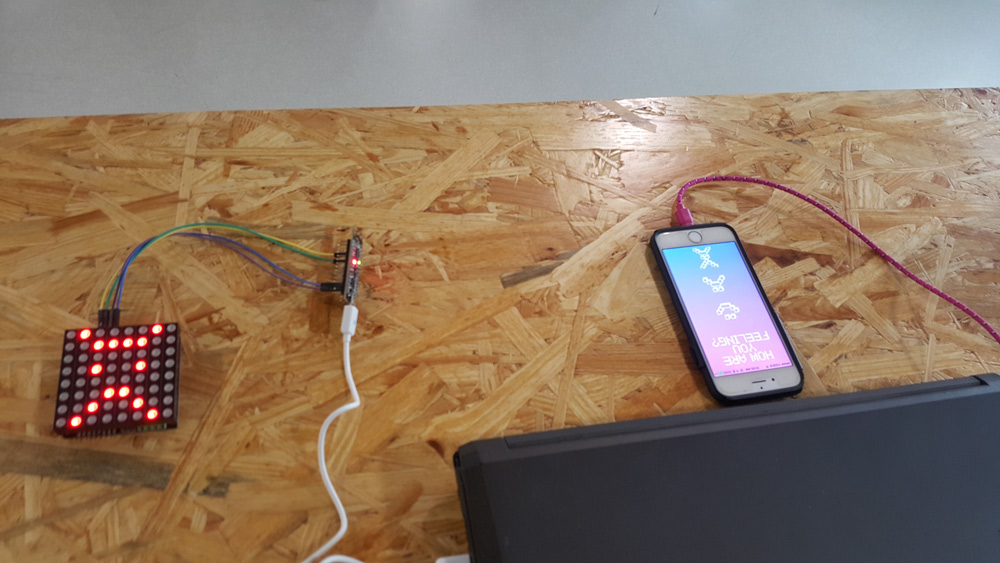
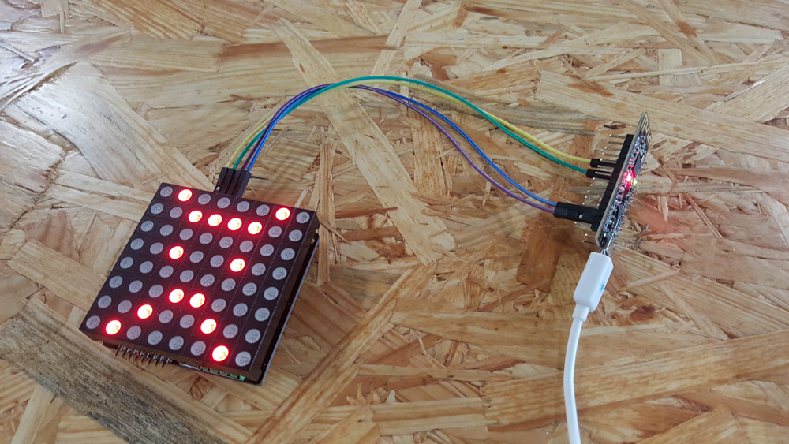
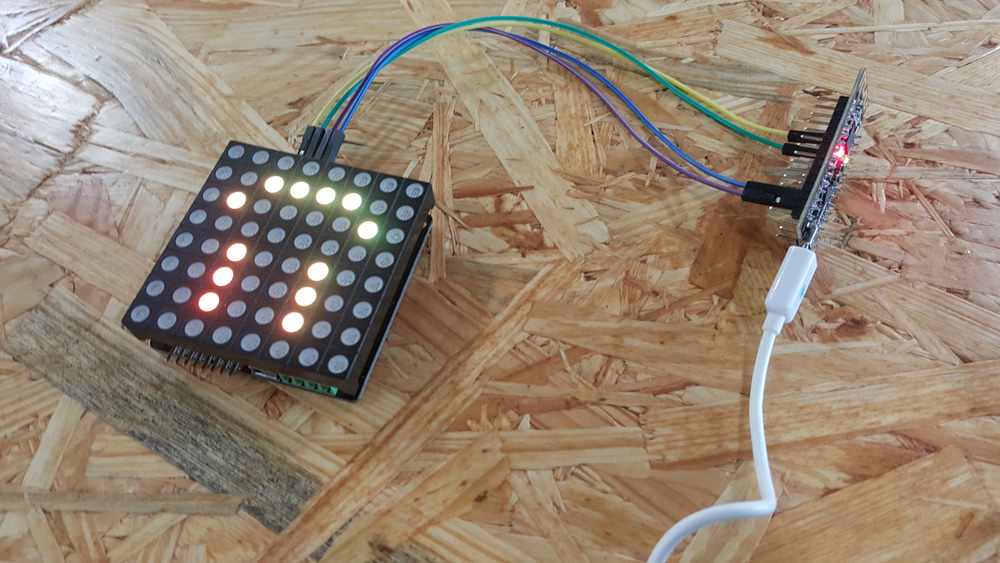
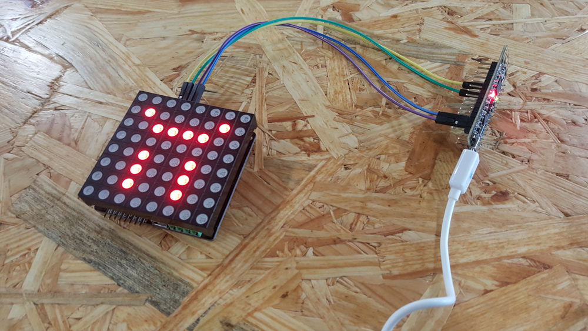

MoodLight!
2016/Wearable Tech/Mobile App/
MoodLight! is a prototype wearable+mobile app that expresses the user's current mood. You have three selections: happy, sad, and angry. Although limited, the project's main goal is to encourage the user be more willing to express their mood in a honest and explicit manner. In an age where emotional health and communication are becoming increasingly important, this project aims to assist those efforts.
How it works
There are two parts to this, one part is an 8x8 superbright LED matrix controlled by a rainbowduino which communicates to the second part via a BLE module. The second part is a mobile app that was made using PhoneGap Cordova. The app is just a single HTML/CSS webpage using some javascript to send signals to the bluetooth module to control the LED display.
   